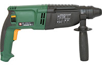
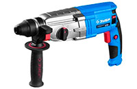

Перфоратор для дома
Перфоратор — это электромеханический или электропневматический инструмент с ударным механизмом, похожий по принципу работы на отбойный молоток. Перфоратором можно пробивать отверстия в бетоне, кирпиче, камне и других прочных материалах, скалывать плитку, штробить каналы под проводку, вести демонтажные работы.
По способу расположения двигателя перфораторы бывают горизонтальными и вертикальными. Перфораторы могут сверлить с ударом или делать удар без сверления. Аккумуляторные модели работают без розетки.
Многие перфораторы оснащают дополнительными функциями и защитой от перегрева и заклинивания.
|
|
 |
 |  |  |
|||||
|---|---|---|---|---|---|---|---|---|---|
| Калибр ЭП-800/26 | Союз ПЕС-25101 | Зубр ЗП-28-800 К | Зубр ЗП-32-1100 К | Интерскол П-22/620ЭР | |||||
| Максимальная сила удара, Дж | 3,2 | 4 | 3,2 | 3,4 | 2,2 | ||||
| Мощность, Вт | 800 | 1000 | 800 | 1100 | 620 | ||||
| Частота ударов, уд/мин | 0 - 4000 | 0 - 4400 | 0- 4800 | 0 - 5100 | 0 - 5060 | ||||
| Частота вращения шпинделя, об/мин | 900 | 0 - 1100 | 0 - 1200 | 0 - 920 | 0 - 1100 | ||||
| Реверс | поворотом щёток | электронный | поворотом щёток | поворотом щёток | электронный | ||||
| Вес | 3,2 | 4,87 | 3,45 | 3,4 | 2,5 |